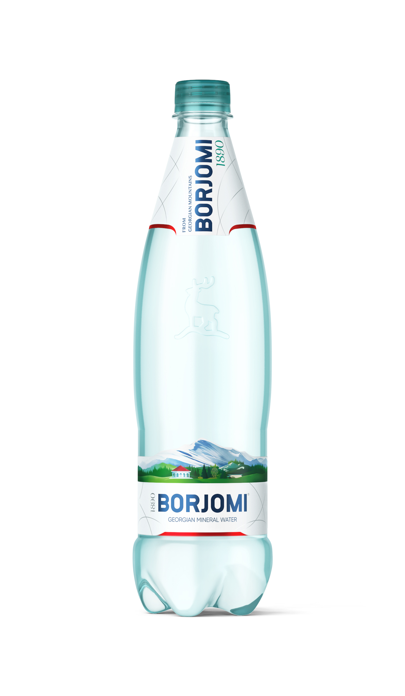

| Главная Каталог Контакты | ||||||||||||||
|---|---|---|---|---|---|---|---|---|---|---|---|---|---|---|
Минеральная вода Borjomi газированная, ПЭТ, 0.75 лОписание товараГазированная вода |
||||||||||||||
|
||||||||||||||
Подробное описание товара«Боржоми» — вода, которую знают и любят миллионы людей по всему миру. Каждая капля этой воды бесценна: «Боржоми» зарождается в вулканических глубинах Грузии, проходит многие километры до земной поверхности, по пути обогащаясь уникальными минералами, и затем добывается из источников Боржомской долины максимально бережно — лишь то количество воды, которое возобновляется естественным образом. |
||||||||||||||